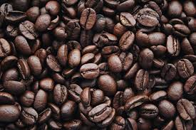
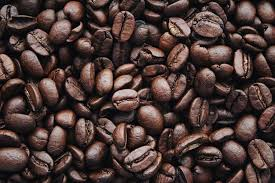

Welcome to Ayngaran Coffee
ur menu and staff will make you feel with our inherent South Indian hospitality. Visit one of our various branches across the city, and treat yourself and your family and friends as you breathe in the aroma of our special filter coffee, take a sip, close your eyes and savor the taste of the world's best south Indian filter coffee. We also have a wide range of snacks to even more elevate the taste of our filter coffee.At Kumbakonam Ayngaran Coffee, our menu and staff will make you feel welcome withSo what are you waiting for?
Find the nearest Ayngaran Coffee, take your family and friends and treat them all to the best "coffee-experience"!
We are Specialised in


 

Visitors: 00148078